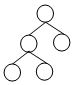
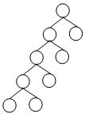
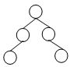
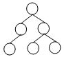

2025 秋冬 ADS 期中考试¶
判断题¶
-
Recall the amortized analysis for Splay Tree and Leftist Heap, from which we can conclude that the amortized cost (time) is never less than the average cost (time).
答案
\(\textnormal{F}\)
-
What makes the time complexity analysis of a backtracking algorithm very difficult is that the sizes of solution spaces may vary.
答案
\(\textnormal{F}\)
-
To implement a binomial queue, the subtrees of a binomial tree are linked in increasing sizes.
答案
\(\textnormal{F}\)
-
All of the Zig, Zig-zig, and Zig-zag rotations in a splay tree not only move the accessed node to the root, but also roughly half the depth of most nodes in the tree.
答案
\(\textnormal{F}\)
-
When insert three keys into a non-empty 2-3 tree, and if the tree gains height when the first key is in, then it is possible that the 2-3 tree will gain more height after the insertions of the next two keys.
答案
\(\textnormal{F}\)
-
Recall that, to solve the closest pair problem, the first step of the divide-and-conquer algorithm divides the point set into \(L\) and \(R\) according to the x-coordinate. Is the following statement true of false?
In the combine step of this algorithm, it is always able to find the closest pair with one point in \(L\) and the other in \(R\).
答案
\(\textnormal{F}\)
单选题¶
-
Among the following trees, which one is impossible to be colored into a legal red-black tree?
○ A. \(\quad\) ○ B. \(\quad\) ○ C. \(\quad\) ○ D.
答案
\(\textnormal{B}\)
-
For the game tree shown below, for which values of \(x\) the dashed branch with the scissors will be pruned by \(\alpha-\beta\) pruning? (Assume that the nodes are evaluated left to right)

○ A. \(x \leq 2\) \(\quad\) ○ B. \(x \leq 3\) \(\quad\) ○ C. \(x \leq 6\) \(\quad\) ○ D. Pruning will happen for all values of \(x\)
答案
\(\textnormal{B}\)
-
A binomial queue of size 42 can be represented by the following binomial queues __.
○ A. B0 B1 B2 B3 B4 B5 \(\quad\) ○ B. B1 B3 B5 \(\quad\) ○ C. B1 B5 \(\quad\) ○ D. B2 B4
答案
\(\textnormal{B}\)
-
Consider the following pseudo-code.
What is the running time of this pseudo-code? Your answer should be as tight as possible. (You may assume that n is a power of 2)strange(a₁, …, aₙ): 1. if n ≤ 2022 then return 2. strange(a₁, …, aₙ/₂) 3. for i = 1 to n: 4. for j = 1 to ⌊√n⌋: 5. print(aᵢ + aⱼ) 6. strange(aₙ/₂+1, …, aₙ)○ A. \(O(n^{1.5})\) \(\,\) ○ B. \(O(n^{1.5} \log n)\) \(\,\) ○ C. \(O(n^2)\) \(\,\) ○ D. None of the other options is correct
答案
\(\textnormal{A}\)
-
To perform Insert on a B+ tree of order M, a node with M+1 keys will be split into 2 nodes. After inserting 1,2,3,……,9,10 consequentially into an initially empty B+ tree of order 3, how many split operations have occurred in total?
○ A. 2 \(\qquad\) ○ B. 3 \(\qquad\) ○ C. 4 \(\qquad\) ○ D. 5
答案
\(\textnormal{D}\)
-
Merge the two leftist heaps in the figure. How many of the following statements is/are FALSE？
- 8 and 9 are siblings
- 6 and 7 are siblings
- 1 and 3 have the different NPL
- along the left path from the root, we have 1,3,6,10

○ A. 1 \(\qquad\) ○ B. 2 \(\qquad\) ○ C. 3 \(\qquad\) ○ D. 4
答案
\(\textnormal{A}\)
程序填空题¶
Divide-and-Conquer Implementation of Strassen Matrix Multiplication
Matrix multiplication is a classical problem in algorithm analysis and is widely used in machine learning computations.
Let \(A\) and \(B\) be two \(n \times n\) matrices. We split each of them into four \((n/2) \times (n/2)\) submatrices (assuming that \(n\) is a power of 2; if not, pad the matrix with zeros to the nearest power of 2):
The traditional matrix multiplication requires 8 recursive multiplications with the time complexity of \(T(n) = O(n^3)\):
In 1969, Volker Strassen proposed a divide-and-conquer algorithm that reduces the number of recursive multiplications to 7, by introducing additional matrix additions and subtractions. This reduces the time complexity to \(T(n) = 7T(n/2) + O(n^2)\), that is \(T(n) = O(n^{\log_2 7}) \approx O(n^{2.81})\) by the Master Theorem.
Strassen Algorithm Steps:
-
After splitting, construct the following seven \((n/2) \times (n/2)\) matrices \(M_1 \sim M_7\) recursively:
\(M_1 = (A_{11} + A_{22}) \times (B_{11} + B_{22})\)
\(M_2 = (A_{21} + A_{22}) \times B_{11}\)
\(M_3 = A_{11} \times (B_{12} - B_{22})\)
\(M_4 = A_{22} \times (B_{21} - B_{11})\)
\(M_5 = (A_{11} + A_{12}) \times B_{22}\)
\(M_6 = (A_{21} - A_{11}) \times (B_{11} + B_{12})\)
\(M_7 = (A_{12} - A_{22}) \times (B_{21} + B_{22})\)
-
Using \(M_1 \sim M_7\) to calculate \(C_{11}, C_{12}, C_{21}, C_{22}\), four sub-blocks of matrix \(C\) (you need to fill? in the formula):
\(C_{11} = M_1 + M_4 - M_5 + M_7\) \(C_{12} = M_3 + M_5\) \(C_{21} =?\) \(C_{22} = M_1 - M_2 + M_3 + M_6\)
-
Join the four \((n/2) \times (n/2)\) submatrices to full \(n \times n\) result matrix \(C\).
#include <stdio.h>
#include <stdlib.h>
/* --- Function Declarations --- */
int** allocMatrix(int n); // Allocate memory for an n×n matrix and initialize to 0
void freeMatrix(int **a, int n); // Free memory of matrix a (size n×n)
void addMatrix(int **A,int **B,int **C,int n); // Matrix addition C = A + B (size n×n)
void subMatrix(int **A,int **B,int **C,int n); // Matrix subtraction C = A - B (size n×n)
void splitMatrix(int **S,int n,int ***S11,int ***S12,int ***S21,int ***S22); // Split n×n matrix S into four (n/2)×(n/2) submatrices
void joinMatrix(int **D,int **C11,int **C12,int **C21,int **C22,int n); // Merge four (n/2)×(n/2) submatrices into one n×n matrix D
void strassenMatrix(int **A,int **B,int **C,int n); // Strassen Algorithm: recursively compute C = A * B (size n×n)
/* --- Main Function --- */
int main(){
int n;
scanf("%d", &n); // Input the dimension of matrices A and B
// Compute the nearest power of 2 greater than or equal to n
int m = 1;
while(m < n) m <<= 1;
【填空 1】;
// Input matrices A and B
for(int i=0;i<n;i++)
for(int j=0;j<n;j++)
scanf("%d", &A[i][j]);
for(int i=0;i<n;i++)
for(int j=0;j<n;j++)
scanf("%d", &B[i][j]);
strassenMatrix(A,B,C,m);
// Output matrix C
for(int i=0;i<n;i++){
for(int j=0;j<n;j++){
if(j) printf(" ");
printf("%d", C[i][j]);
}
printf("\n");
}
freeMatrix(A,m);
freeMatrix(B,m);
freeMatrix(C,m);
return 0;
}
/* --- Strassen Algorithm --- */
void strassenMatrix(int **A,int **B,int **C,int n){
if(【填空 2】){
C[0][0]=A[0][0]*B[0][0];
return;
}
int **A11,**A12,**A21,**A22;
int **B11,**B12,**B21,**B22;
splitMatrix(A,n,&A11,&A12,&A21,&A22);
splitMatrix(B,n,&B11,&B12,&B21,&B22);
int nn=n/2;
int **M1=allocMatrix(nn),**M2=allocMatrix(nn),**M3=allocMatrix(nn),
**M4=allocMatrix(nn),**M5=allocMatrix(nn),**M6=allocMatrix(nn),**M7=allocMatrix(nn);
int **T1=allocMatrix(nn),**T2=allocMatrix(nn); // temporary matrices
// step1
// M1
addMatrix(A11,A22,T1,nn);
addMatrix(B11,B22,T2,nn);
【填空 3】;
/* M2-M7 omitted */
// step 2
int **C11=allocMatrix(nn),**C12=allocMatrix(nn),**C21=allocMatrix(nn),**C22=allocMatrix(nn);
addMatrix(M1,M4,T1,nn); subMatrix(T1,M5,T2,nn); addMatrix(T2,M7,C11,nn);
addMatrix(M3,M5,C12,nn);
【填空 4】;
subMatrix(M1,M2,T1,nn); addMatrix(T1,M3,T2,nn); addMatrix(T2,M6,C22,nn);
// step 3
【填空 5】;
// Free all temporary matrices
freeMatrix(A11,nn); freeMatrix(A12,nn); freeMatrix(A21,nn); freeMatrix(A22,nn);
freeMatrix(B11,nn); freeMatrix(B12,nn); freeMatrix(B21,nn); freeMatrix(B22,nn);
freeMatrix(M1,nn); freeMatrix(M2,nn); freeMatrix(M3,nn); freeMatrix(M4,nn);
freeMatrix(M5,nn); freeMatrix(M6,nn); freeMatrix(M7,nn);
freeMatrix(T1,nn); freeMatrix(T2,nn);
freeMatrix(C11,nn); freeMatrix(C12,nn); freeMatrix(C21,nn); freeMatrix(C22,nn);
}
/* --- Other functions --- */
int** allocMatrix(int n){
int **a = (int**)malloc(n*sizeof(int*));
for(int i=0;i<n;i++) a[i]=(int*)calloc(n,sizeof(int));
return a;
}
void freeMatrix(int **a, int n){
if(!a) return;
for(int i=0;i<n;i++) free(a[i]);
free(a);
}
void addMatrix(int **A,int **B,int **C,int n){
for(int i=0;i<n;i++)
for(int j=0;j<n;j++)
C[i][j]=A[i][j]+B[i][j];
}
void subMatrix(int **A,int **B,int **C,int n){
for(int i=0;i<n;i++)
for(int j=0;j<n;j++)
C[i][j]=A[i][j]-B[i][j];
}
void splitMatrix(int **S, int n, int ***S11,int ***S12,int ***S21,int ***S22){
int m=n/2;
int **a=allocMatrix(m), **b=allocMatrix(m), **c=allocMatrix(m), **d=allocMatrix(m);
for(int i=0;i<m;i++)
for(int j=0;j<m;j++){
a[i][j]=S[i][j];
b[i][j]=S[i][j+m];
c[i][j]=S[i+m][j];
d[i][j]=S[i+m][j+m];
}
*S11=a; *S12=b; *S21=c; *S22=d;
}
void joinMatrix(int **D,int **C11,int **C12,int **C21,int **C22,int n){
int m=n/2;
for(int i=0;i<m;i++)
for(int j=0;j<m;j++){
D[i][j]=C11[i][j];
D[i][j+m]=C12[i][j];
D[i+m][j]=C21[i][j];
D[i+m][j+m]=C22[i][j];
}
}
答案
int **A=allocMatrix(m),**B=allocMatrix(m),**C=allocMatrix(m)n==1strassenMatrix(T1,T2,M1,nn)addMatrix(M2,M4,C21,nn)joinMatrix(C,C11,C12,C21,C22,n)